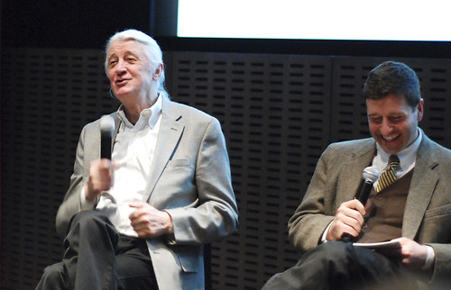

Art
Artists
Salvador Dalí
I don't do drugs. I am drugs.
Jean-Michel Basquiat
Frida Khalo
Image by gianna elena at https://www.flickr.com/photos/8318671@N07
Design
Designers
David Carson
Just because something's legible doesn't means it communicates. More importantly, it doesn't mean it communicates the right thing. So, what is the message sent before somebody actually gets into the material? And I think that's sometimes an overlooked area.
Neville Brody
Susan Kare
Image by Kalboz at https://www.flickr.com/photos/kalboz/
Typography
Tyographers
Matthew Carter
Image by AIGA New York Chapter at https://www.flickr.com/photos/34631821@N03
Jan Tschichold
Engineering
Engineers
Linus Torvalds
See, you not only have to be a good coder to create a system like Linux, you have to be a sneaky bastard too.
Tim Berners-Lee
Imagine that everything you are typing is being read by the person you are applying to for your first job. Imagine that it’s all going to be seen by your parents and your grandparents and your grandchildren as well.
Håkon Wium Lie
Image by Martin Bekkelund at https://www.flickr.com/photos/25013827@N04